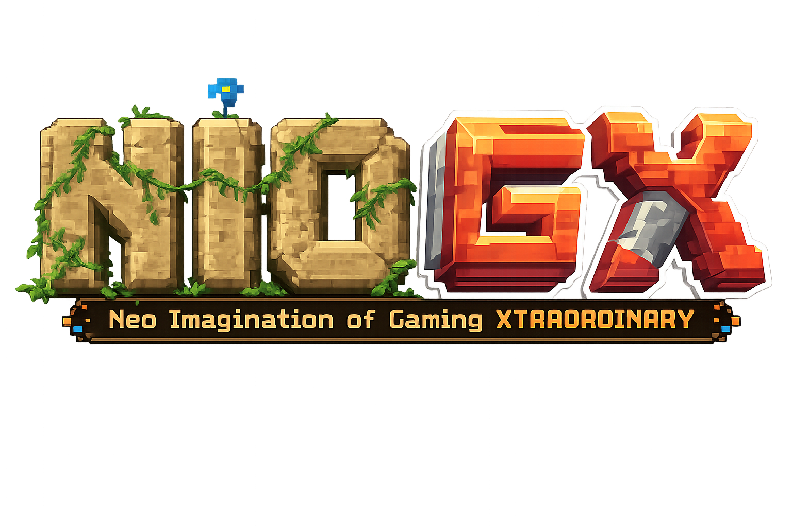
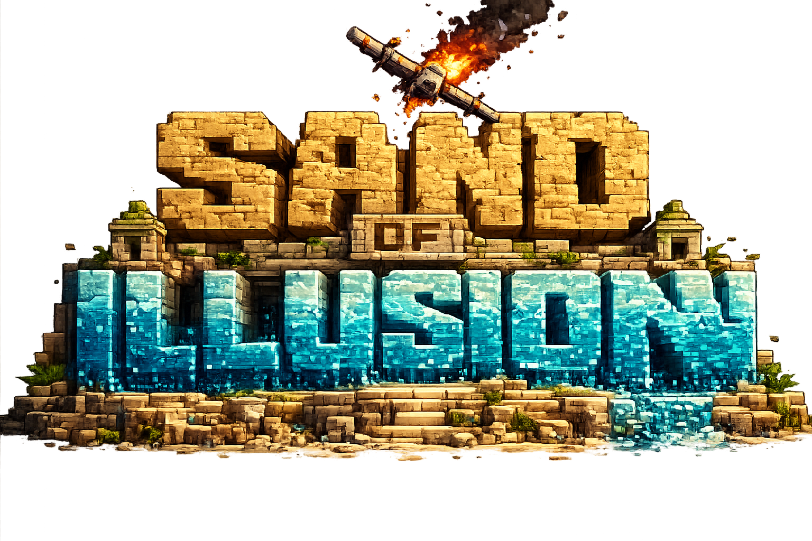
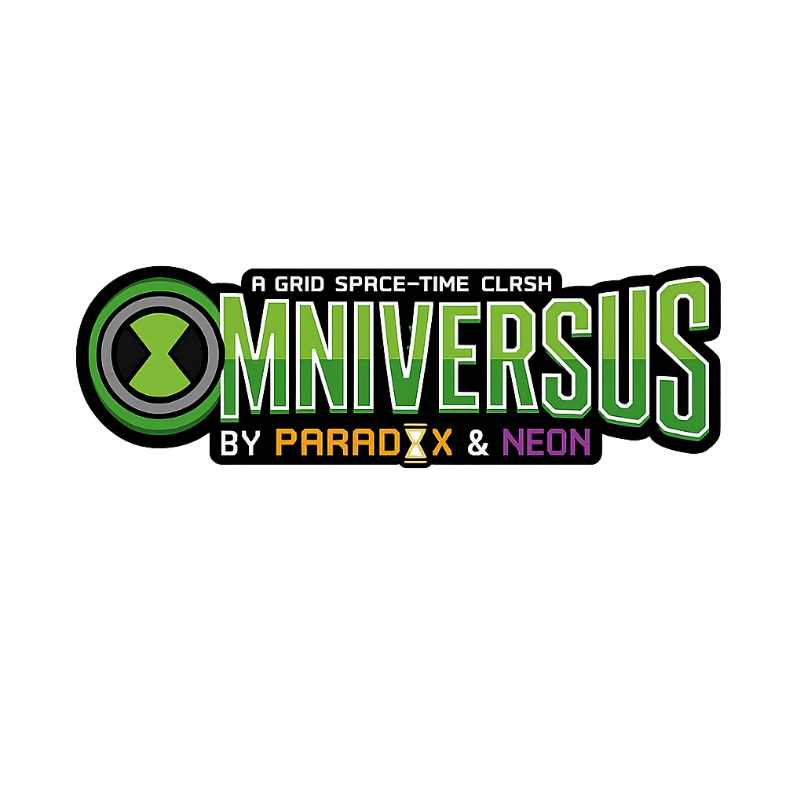
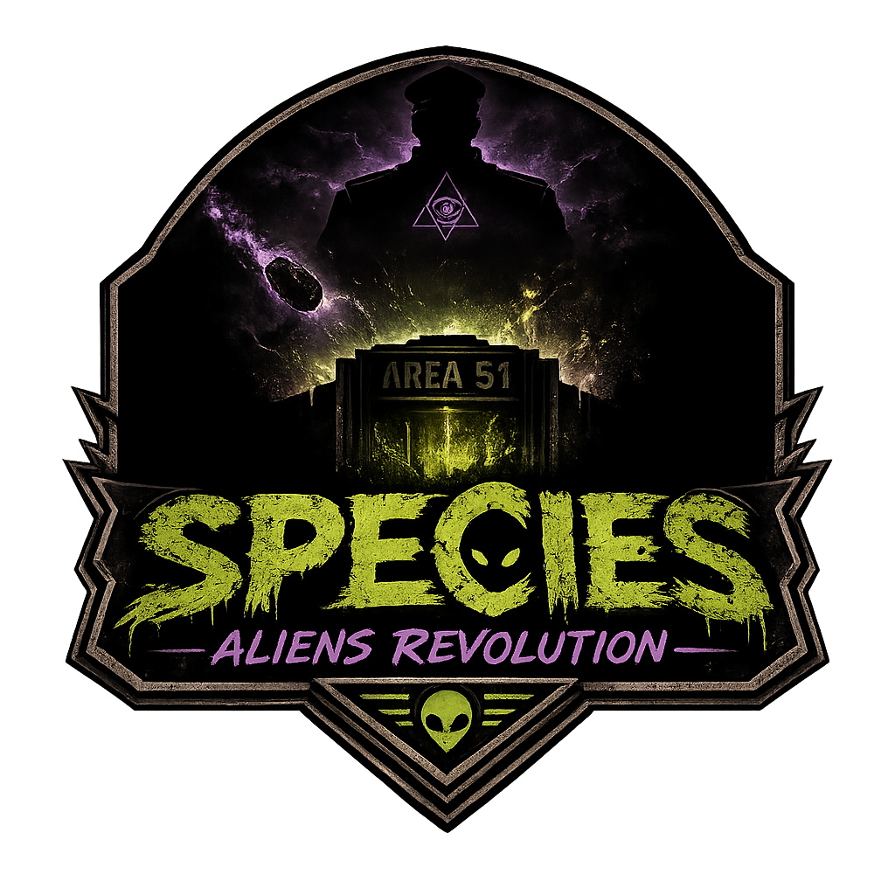

Sobre Mí
Soy alguien chill, que simplemente quiere probar cosas interesantes sin arriesgar mi vida :v. Tengo varios hobbies como el beyblade, programar, además de siempre con ganas de hacer show.
Mis Habilidades
- Usuario experimentado principiante en html, css, javascript en vs code.
- Creador de videojuegos.
- Egoísta
- Experto en chistes.
- Usuario innovador en IA.
- Trabajador.
Proyectos Principales

NIOGX (Neo Imagination of Gaming XTRAORDINARY)
Mi proyecto de empresa, que crea juegos con enfoques de tanto usar lo viejo y renovarlo, como crear nuevas cosas. Creamos juegos que buscan que el usuario experimente la sensación de probar nuevas maneras de jugar, volver a jugar y encontrar algo nuevo. Actualmente buscamos crear juegos 100% gratuitos sin fines de lucro; nuestro financiamiento va directamente de donaciones y merchandising.
Videojuegos en progreso:

Sand of illusion:Juego para 2 jugadores, basado en el libro "Playas del olvido". Dos personas quedan atrapadas en una isla donde ambos creen que el otro es una ilusión.

OMNIVERSUS:Un juego de la franquicia de Ben 10. Una grieta espacio-temporal obligará a diferentes variantes a enfrentarse.

ESPECIES:Juego basado en el evento de "Storm Area 51". Tu y tu grupo serán aliens que se encontraban en las instalaciones.
Contacto
- Gmail: fangulo.2211@gmail.com
- Teléfono: +51 974 762 302